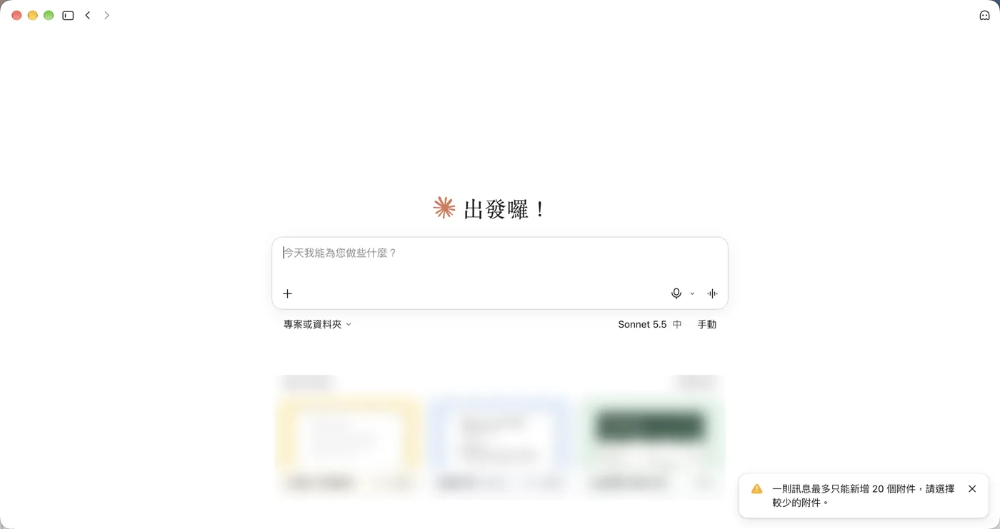
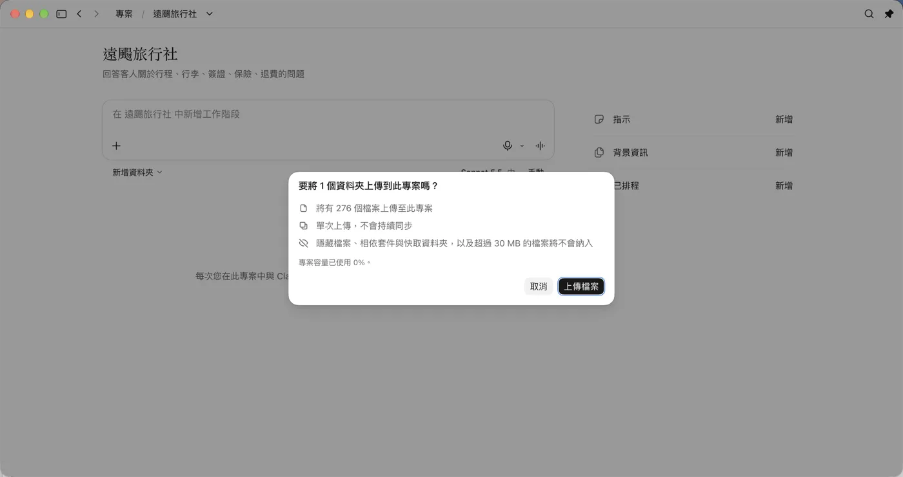
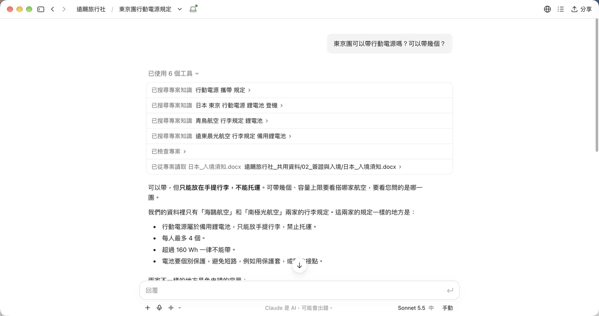
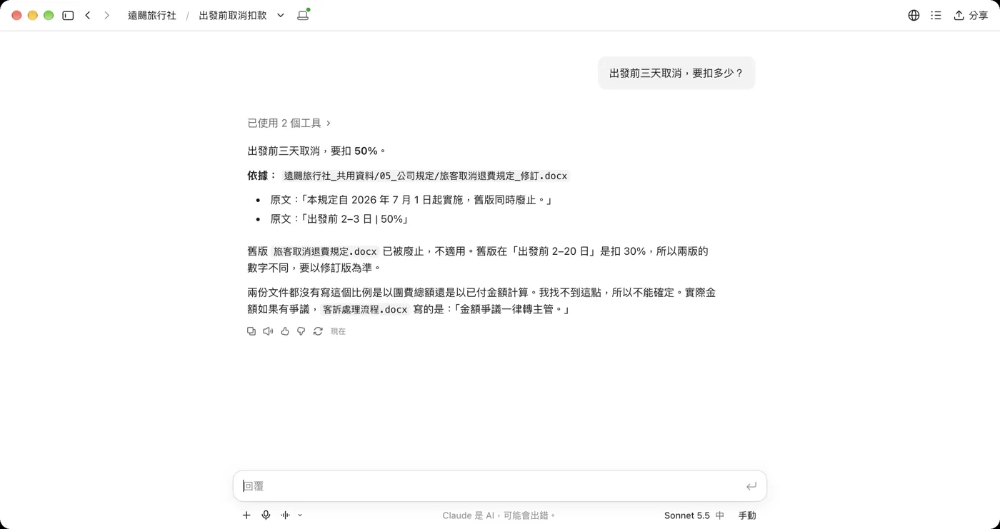
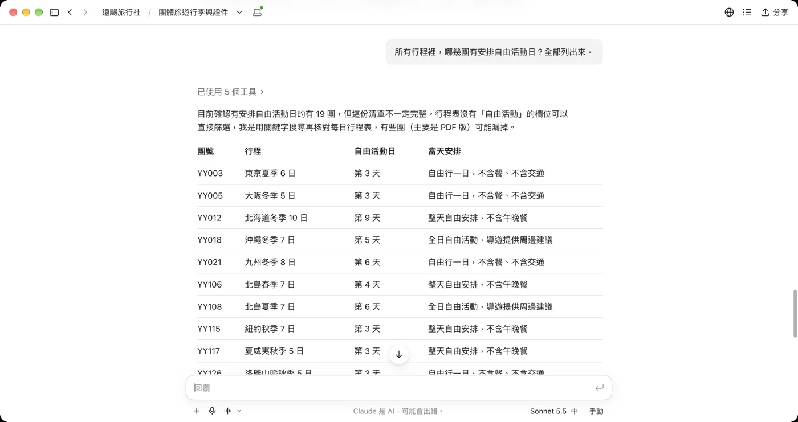

RAG 入門：三百份文件，問一句就找到
遠颺旅行社六個人共用一個資料夾，裡面有三百多份文件：各家航空公司的行李規定、各國簽證、保險條款、一百多份行程表、退費規定。客人每天在 LINE 上問「東京團可以帶行動電源嗎」「出發前三天取消要扣多少」，新來的助理每一題都要翻很久。這一課讓 Claude 讀懂這三百份文件，問一句就找到答案。這個做法叫 RAG，聽起來很難，其實有付費方案就能用，而且不用寫程式，用 Claude 的聊天版就好。不會的，就問 Claude。
看不到影片？到 YouTube 觀看。每一段的一分鐘短片在 AI 實戰短片播放清單。
先下載示範檔案
「遠颺旅行社」的共用資料夾，276 份 Word 和 PDF。旅行社、航空公司、保險公司和所有規定都是假的，只是長得像真的，真的規定請看各家官網。
A｜塞不進去：專案和背景資訊
先試試看直接丟進聊天：按輸入框的 + → 上傳或新增檔案，把檔案全選起來。會跳出「一則訊息最多只能新增 20 個附件」。剩下的兩百多份塞不進去。

這時候要用專案。專案是一個會記得資料的房間，房間裡有一個書架，官方叫「專案知識庫」，畫面上叫 背景資訊。文件放上書架以後，在這個專案裡的每一次對話，它都會先去書架上翻。
- 在輸入框下面點 專案或資料夾 → 新增專案。填名字和目標，例如「回答客人關於行程、行李、簽證、保險、退費的問題」，按 建立專案。
- 專案頁面右邊有 指示 和 背景資訊。點背景資訊的 新增 → 從裝置上傳 → 資料夾，選解壓縮出來的資料夾。整個資料夾連子資料夾可以一次放上去。
- 確認視窗會寫「單次上傳，不會持續同步」：電腦裡的文件改了，書架上的不會跟著改，要自己再放一次。

示範時傳到 188 份就停了，訊息是「已達每小時的文件轉換上限」。剩下的等一小時，再按「重試」就好。
免費版也能開專案，最多五個，可是放的資料要在 Claude 一次能看的量以內。資料超過這個量時，自動改用 RAG，可以放大約十倍的資料，這只有付費方案才有。
B｜先翻再答：RAG 是什麼
RAG（Retrieval-Augmented Generation，檢索增強生成）的意思只有四個字：先翻再答。它不是把三百份背起來；你問一句，它先去書架上找出跟問題有關的幾段，只看這幾段，再回答你。
回答上面有一行「已使用 6 個工具」，點開來會看到「已搜尋專案知識：行動電源 攜帶 規定」，這就是它在翻書架。再點開一層，它從三百份裡只拿出八份。

航空公司的規定裡根本沒有「行動電源」四個字，寫的是「備用鋰電池」。它照意思找，不只照字找，所以找到了。藏在檢查表角落的小規定，它也找得到：
C｜找不到就說不知道：三條規矩
資料夾裡有新舊兩版退費規定。示範時它用了修訂版，因為新版開頭寫了「舊版同時廢止」。文件寫清楚日期、舊的標明廢止，它才分得出來。問資料裡沒有的冰島團，它也說找不到。
可是這次答對，不代表每次都會對。翻錯頁、沒翻到的時候，它一樣會回答，口氣一樣有把握。所以要讓每一個答案都查得到出處。點專案頁面右邊 指示 的 新增，寫上：

D｜它只翻了幾頁：RAG 適合什麼
示範時它列了 19 團，還自己說「這份清單不一定完整，有些團可能漏掉」。因為它是先找有關的幾段，不是每一份都翻過。

同一招也能用在診所的衛教單、物業的社區規約、公司的新人手冊。
今天的作業
沒有付費的人
開一個專案，放十幾份工作上常查的文件，在指示寫上面那三條規矩，問三個平常要翻很久的問題。
有付費的人
把整個共用資料夾放進專案，問一個答案藏在角落的問題，看它附不附上原文。
過程中卡住了，就截圖問 Claude。
下一課：Day 10，讓 Claude 看懂照片，一疊照片變成一張表。
官方來源
- Claude 說明：什麼是專案
- Claude 說明：專案的 RAG
- Claude 說明：上傳檔案的限制
- Claude 文件：減少答錯（幻覺）
- Anthropic：Contextual Retrieval
- Claude：方案與價格
資料查證日期：2026 年 11 月 20 日。App 的畫面是當天用付費帳號、繁體中文介面實際操作的樣子。AI 工具更新很快，功能和價格請以官方網站為準。